Uda, Nara: things to do, food and stays
Uda · Nara
Uda
Highlighted on the Nara map.
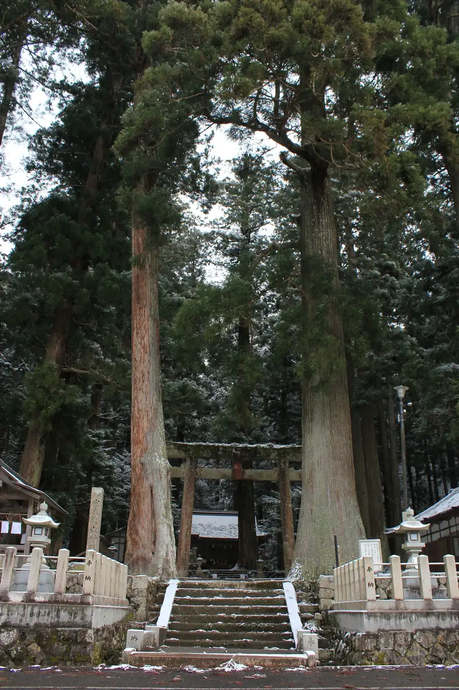
Stay
うだ薬湯の宿 やたきや
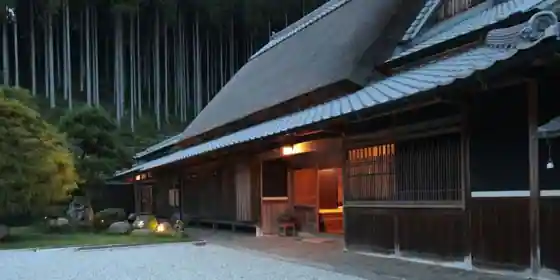
Uda Yakuyu No Yado Yatakiya
肉馳走宿 瀧口
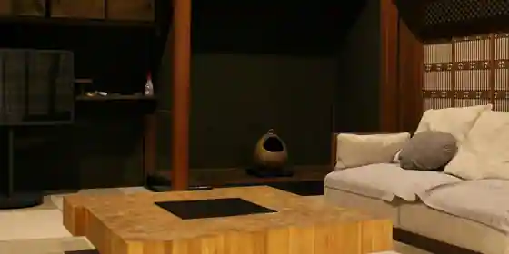
Niku Chiso Yado Takiguchi
Inn in Haibarahagiwara, Uda with one group per day.
ささゆり庵 小角（おづぬ）
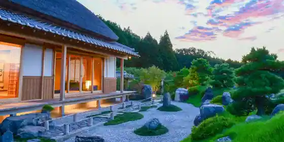
Sasayuri Iori Kosumi (Ozunu)
Inn in Murofukano, Uda with scenic views.
ささゆり庵 蔵王
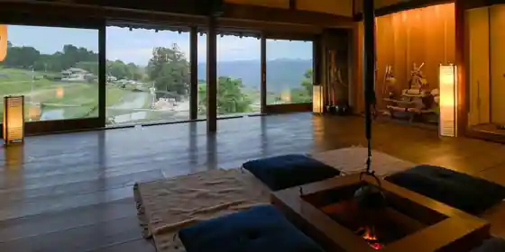
Sasayuri Iori Zao
Inn in Murofukano, Uda with scenic views and a renovated traditional house.
天然温泉たまご肌美人の湯 美榛苑
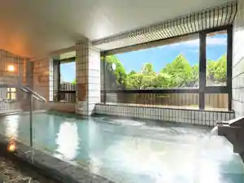
Tennen Onsen Tamago Hada Bijin No Yu Bi Shin En
奈の音
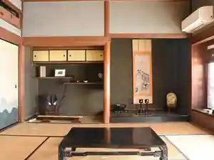
Na No Oto
THERAPYNIA TAPtoBED
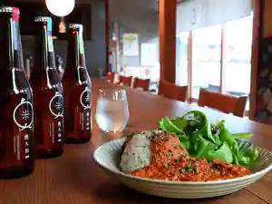
THERAPYNIA TAPtoBED
Ｔｈｅ ＥＸＰ Ｙａｃｈｉｙｏ
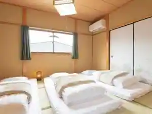
The EXP Yachiyo
Inn in Muroono, Uda; 1-minute walk from (Kintetsumurokuchiono Station.
民宿 むろう
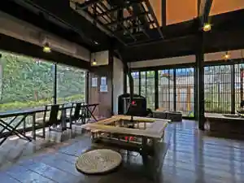
Minshuku Muro
Dining
一如庵
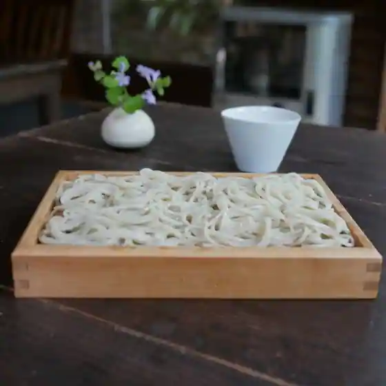
Ichinyo Iori
銘菓きみごろも本舗 松月堂
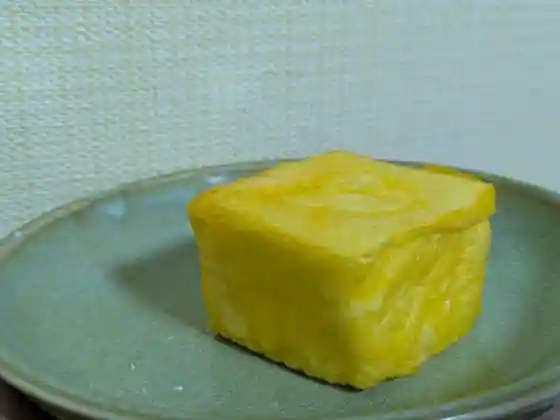
Meika Kimigoromo Honpo Matsuzuki Do
道の駅 宇陀路大宇陀
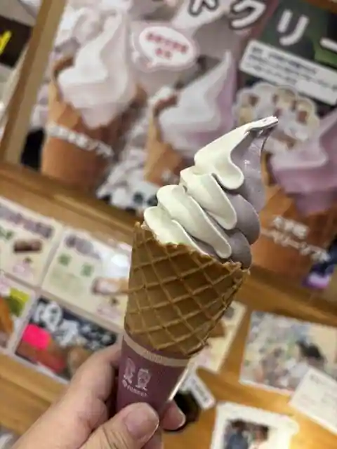
Michi No Eki Uda Michi Oda
茶房 葛味庵
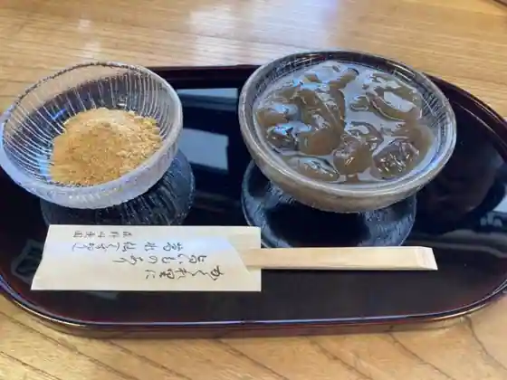
Sabo Kuzu Aji Iori
旅館栄吉
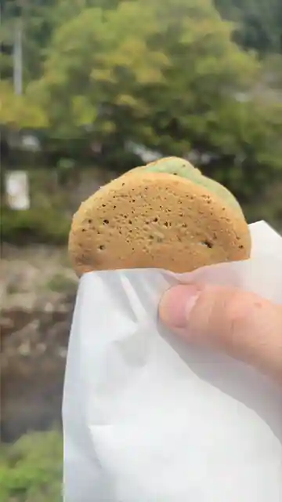
Ryokan Eikichi
はぎ乃
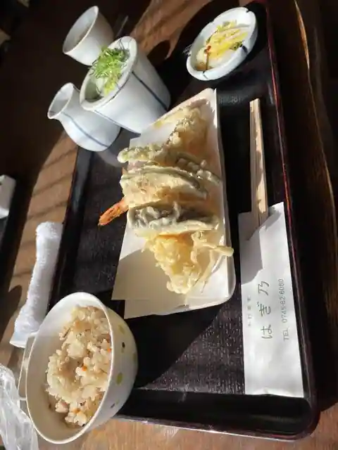
Hagi No
さっぽろらうめん 榛原店
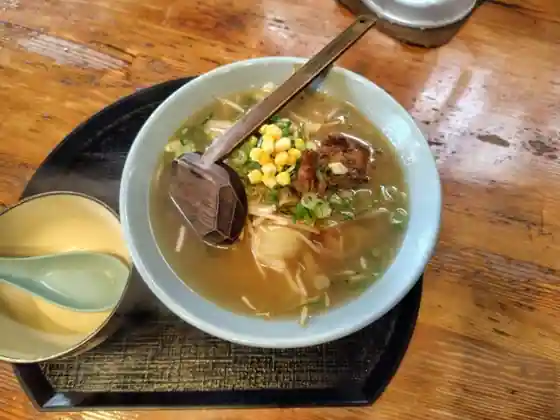
Sappororaumen Haibara
橋本屋
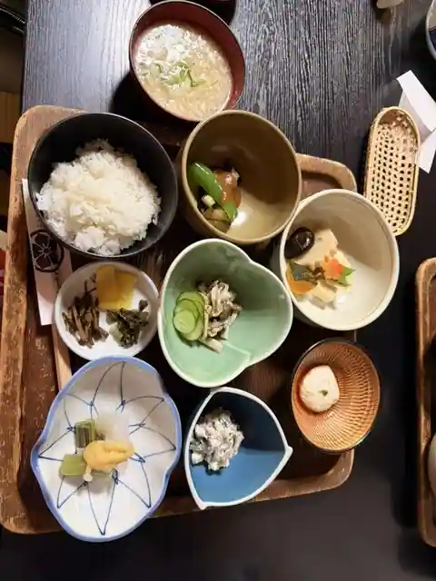
Hashimoto Ya
大和榛原牛 うし源 本店
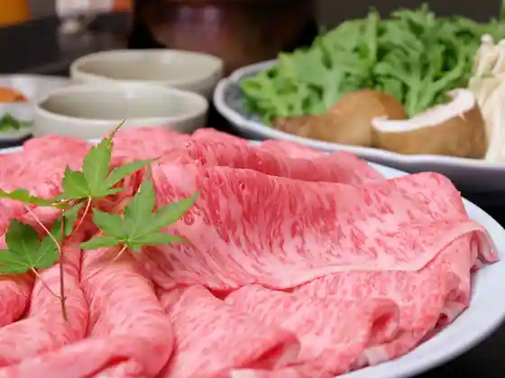
Yamato Haibara Ushi Ushi Gen Hon
パティスリーアナンダ
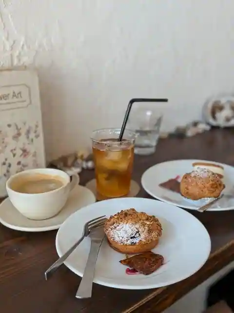
Pateisuriananda
Cake Cafe 楽
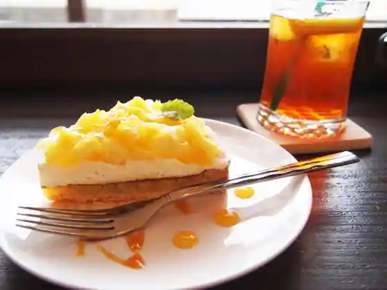
Cake Cafe Raku
活江戸焼うなぎ 旭亭
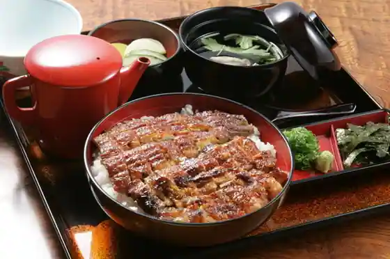
Katsu Edo Yaki Unagi Asahi Tei
福寿館はいばら本店
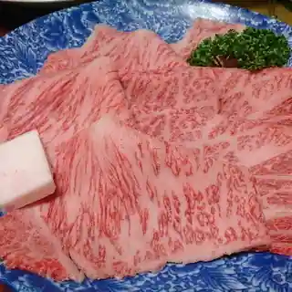
Fukuju Kan Haibara Hon
うたのごはん
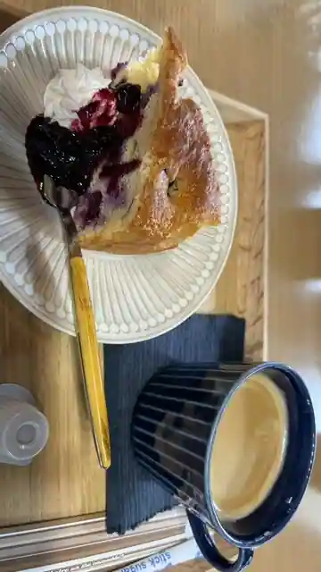
Utanogohan
とっきん亭
Tokkin Tei
町家盆栽Cafe コトノハ
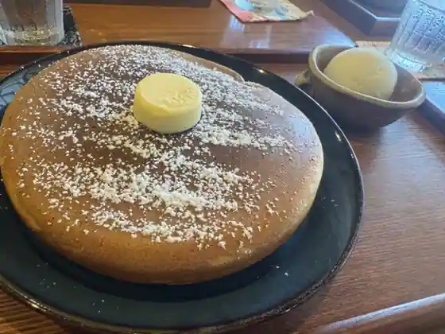
Choka Bonsai Cafe Kotonoha
青葉の庄
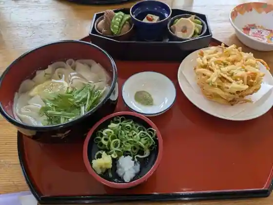
Aoba No Sho
室生よもぎ餅本舗 もりもと
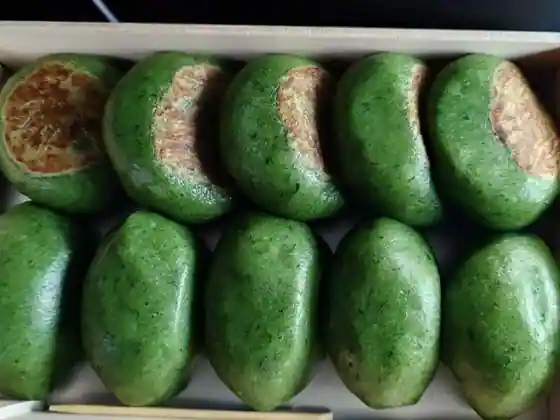
Muro Yomogi Mochi Honpo Morimoto
こんぴらうどん 富士
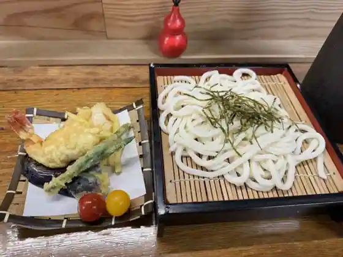
Konpiraudon Fuji
寿し善
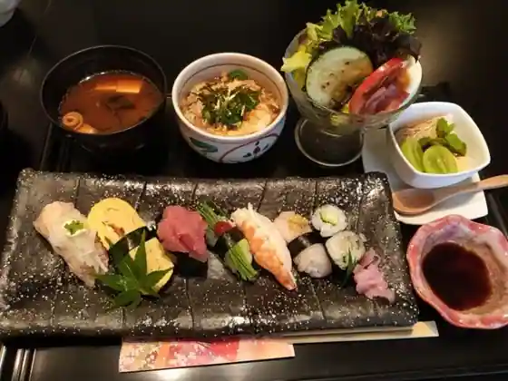
Hisashi Shi Zen
ヒルトコ カフェ
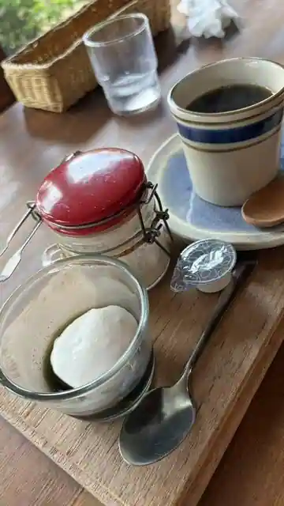
Hirutoko Cafe
西昭和堂
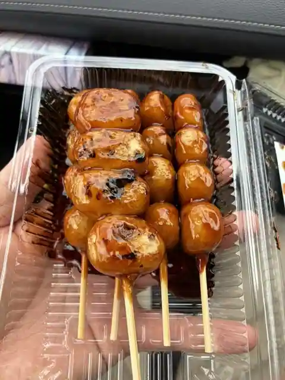
Nishi Showa Do
cafeカエデ
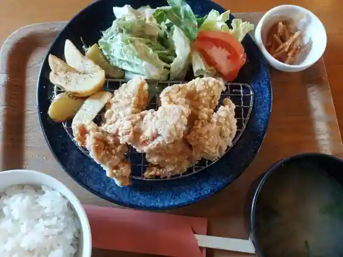
cafe Kaede
大和牛 丼の店 件
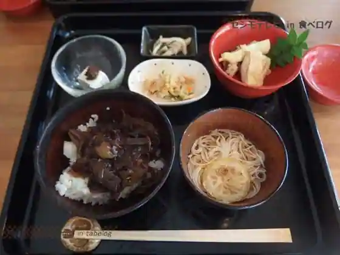
Yamato Ushi Donburi No Ken
Sights
Ryuketsu Shrine
Muro Tera
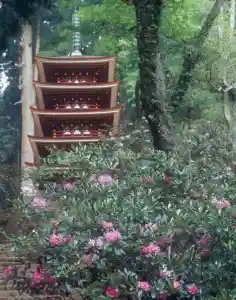
Butsuryuji
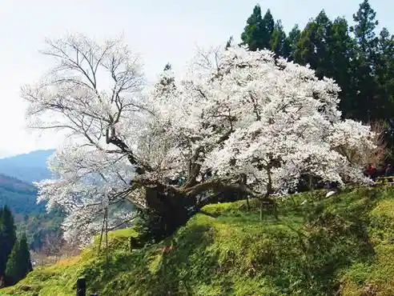
Ryuogafuchi
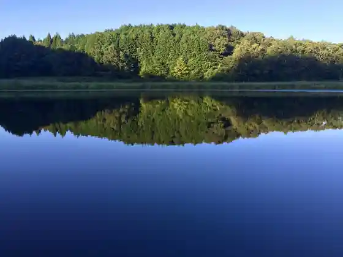
Matabe Sakura (Hongo no Taki Sakura)
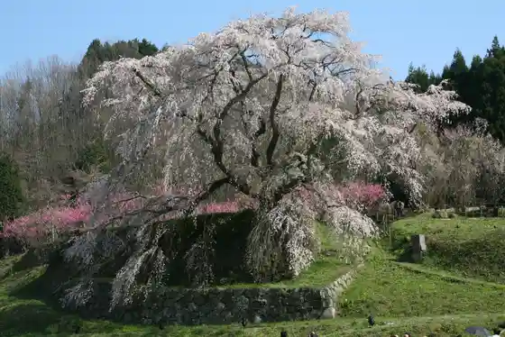
Ono Tera
U Ta Suibun Shrine (Uda Usagi Tano)
Ryu Chin Gorge
Myo Kichijo Ryuketsu
Uda Matsuyama
Yatagarasu Shrine
Uda · Animaru Park
Sumi Saka Shrine
Kagirohi no Oka Manyo Park
Kai Cho Tera
Nara Kaede no Sato Hirara
Roadside Station Uda Michi Muro
Miroku Magai Hotoke (Ono Tera)
Taigan Tera
Haibara Tori Miyama Park
Uda Heisei Haibara Kodomo no Mori Park
Uda Rekishi Bunka Kan (Kusuri no Kan)
Roadside Station Uda Michi Dai Uda Akino Yado
Aki Shrine
Furusato Genki Village
Suibun Shrine (Uda Dai Uda)
Yatsu Bo Sugi
Uda Megumi Bi Su Shrine
Soja Suibun Shrine
Anzan Tera
Machinami Gyararii Ishi Kei Iori